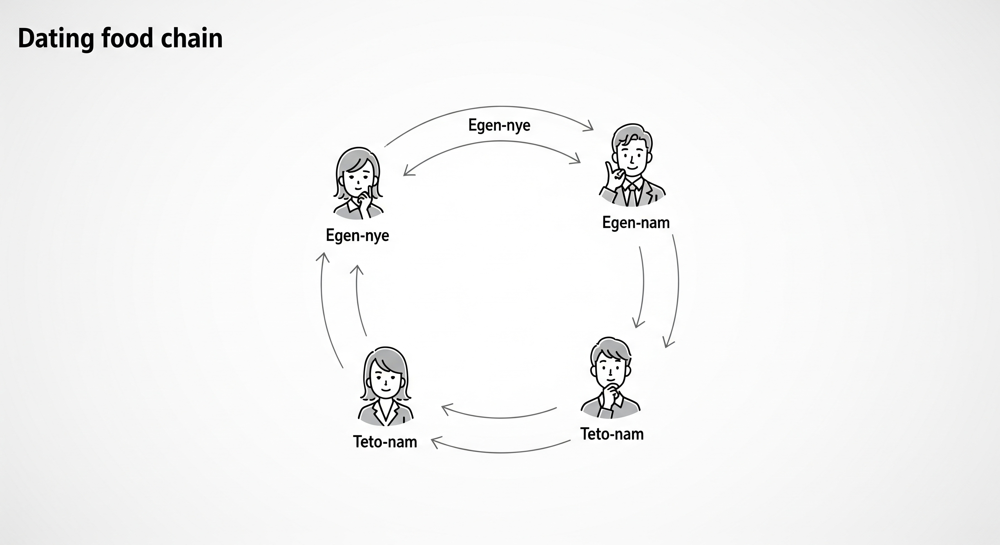

테토-에겐 성격 유형이란?
테토-에겐 성격 유형은 사회적·행동적 특성에 따라 남성성과 여성성을 구분한 성격 유형 분류법입니다.
생물학적 성별과는 무관하게, 개인의 행동 패턴과 성향에 따라 테토(공격적, 논리적)와 에겐(섬세함, 감성적)
특성으로 나누고, 이를 다시 남성성과 여성성에 따라 테토남, 테토녀, 에겐남, 에겐녀로 구분합니다.
연애 먹이사슬
테토-에겐 성격 유형에서는 '연애 먹이사슬'이라는 재미있는 개념이 있습니다.
이는 각 유형이 특히 호감을 느끼는 다른 유형을 순환 구조로 표현한 것입니다.

에겐녀는 에겐남에게, 에겐남은 테토녀에게, 테토녀는 테토남에게, 테토남은 에겐녀에게
자연스럽게 끌리는 경향이 있다고 합니다. 물론 이는 절대적인 법칙이 아니라 재미로 보는
하나의 패턴입니다.
각 유형별 특징
테토남
- 공격성과 사냥 본능이 강함
- 자기주장이 강하며 리더십이 있음
- 감정보다 논리를 우선시함
- 친구가 많거나 무리 생활에 익숙함
- 외부 세계에 관심이 많음
- 분석하고 판단하는 것을 좋아하며, 현실 지향적임
- 추상적 이념보다는 실질적 성과를 선호함
- 단순하고, 한 번 결정한 것은 밀어붙이는 스타일
- 도전과 모험을 좋아함
- 패션, 향수 등에 큰 관심이 없는 경우가 많음
테토녀
- 활발하고 에너지가 넘치는 성격
- 사교성이 좋고 친구 관계가 넓음
- 직설적이고 솔직한 표현을 선호함
- 목표 지향적이고 성취 욕구가 강함
- 경쟁을 즐기고 도전적인 상황을 선호함
- 감정 표현이 풍부하고 열정적임
- 실용적이고 현실적인 접근 방식을 선호함
- 독립적이고 자기주도적인 성향이 강함
- 결단력이 있고 빠른 의사결정을 함
- 외향적이고 사회적 활동을 즐김
에겐남
- 섬세하고 감성적인 성향이 있음
- 트렌드에 민감하고 패션, 미용에 관심이 많음
- 타인의 감정을 잘 이해하고 공감 능력이 뛰어남
- 조화와 균형을 중시하는 평화주의적 성향
- 예술적 감각과 창의성이 풍부함
- 세심한 배려와 친절함을 보임
- 갈등보다는 타협과 조정을 선호함
- 감정 표현이 풍부하고 소통 능력이 좋음
- 심미적 가치를 중요시함
- 인간관계에서 깊이 있는 교류를 추구함
에겐녀
- 차분하고 내면적인 성향이 강함
- 섬세하고 감수성이 풍부함
- 타인의 감정에 민감하게 반응함
- 조용하고 신중한 태도를 보임
- 안정적이고 편안한 환경을 선호함
- 깊이 있는 관계와 소통을 중시함
- 예술적 감각과 심미안이 뛰어남
- 자기 성찰과 내적 성장에 관심이 많음
- 배려심이 깊고 이타적인 성향이 있음
- 직관적이고 통찰력이 있음